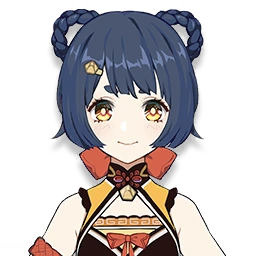
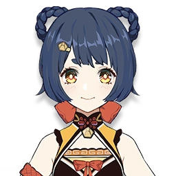
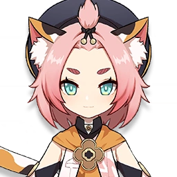
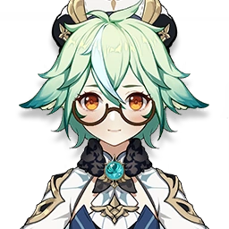
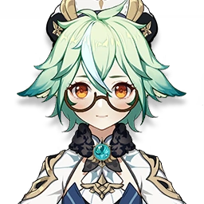

-
Noelle
Geo

Descrição
Noelle é uma empregada obediente que sonha em se juntar aos Cavaleiros de Favonius. Ela usa como arma um espadão e tem habilidade para cozinhar um exemplar especial do prato Panqueca Esponjosa.
-
Xiangling
Pyro
 
Descrição
Xiangling é a chefe de cozinha no Restaurante de Wanmin. Seus pratos mais populares são os picantes! Ela usa como arma uma lança e tem habilidade para cozinhar um exemplar especial do prato Peixe Fervido do Restaurante de Wanmin.
-
Chongyun
Cryo
Descrição
Chongyun é um exorcista de Liyue. Ele usa como arma um espadão e tem habilidade para cozinhar um exemplar especial do prato Macarrão Frio com Iguarias das Montanhas.
-
Diona
Cryo
Descrição
Diona é uma bartender talentosa na Taverna da Cauda do Gato, em Mondstadt. Ela usa como arma um arco e tem habilidade para cozinhar um exemplar especial do prato Isso não é um aperitivo.
-
Barbara
Hydro

Descrição
Barbara é diaconesa da Igreja de Favonious, mas também é uma estrela amada pelas pessoas de Mondstadt. Ela usa como arma um catalisador e tem habilidade para cozinhar um exemplar especial do prato Ensopado Picante.
-
Sucrose
Anemo
 
Descrição
Sucrose é uma bio-alquimista curiosa ligada aos Cavaleiros de Favonius. Ela usa como arma um catalisador e tem habilidade para cozinhar um exemplar especial do prato Refeição Nutritiva (V.593).
-
Fischl
Electro

Descrição
Fischl é uma investigadora da Guilda de Aventureiros de Mondstadt. Seu corvo e parceiro de batalha se chama Oz. Ela usa como arma um arco e tem habilidade para cozinhar um exemplar especial do prato Sinfonia Abençoada.